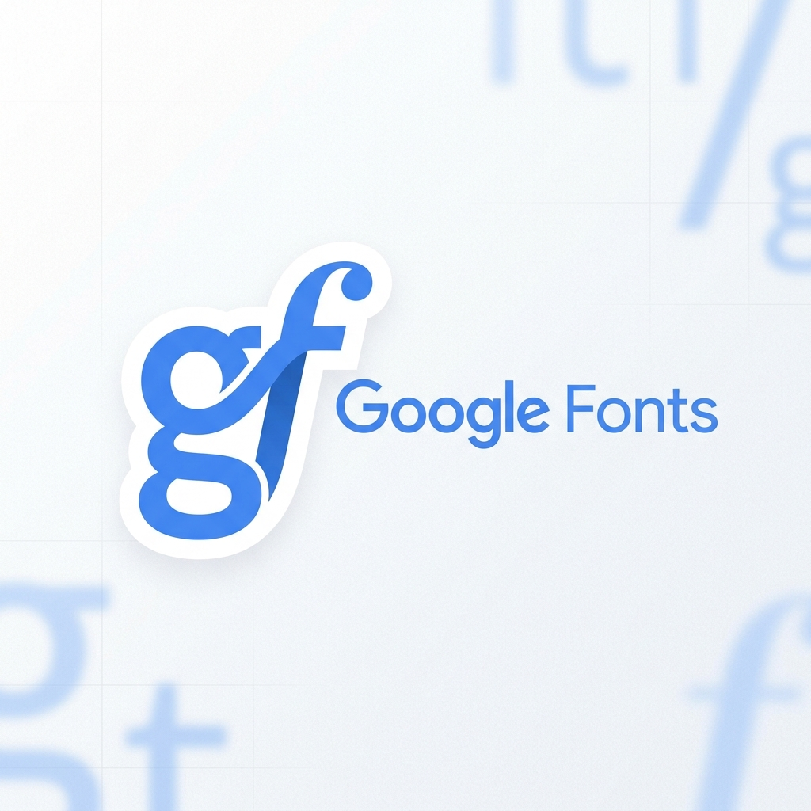
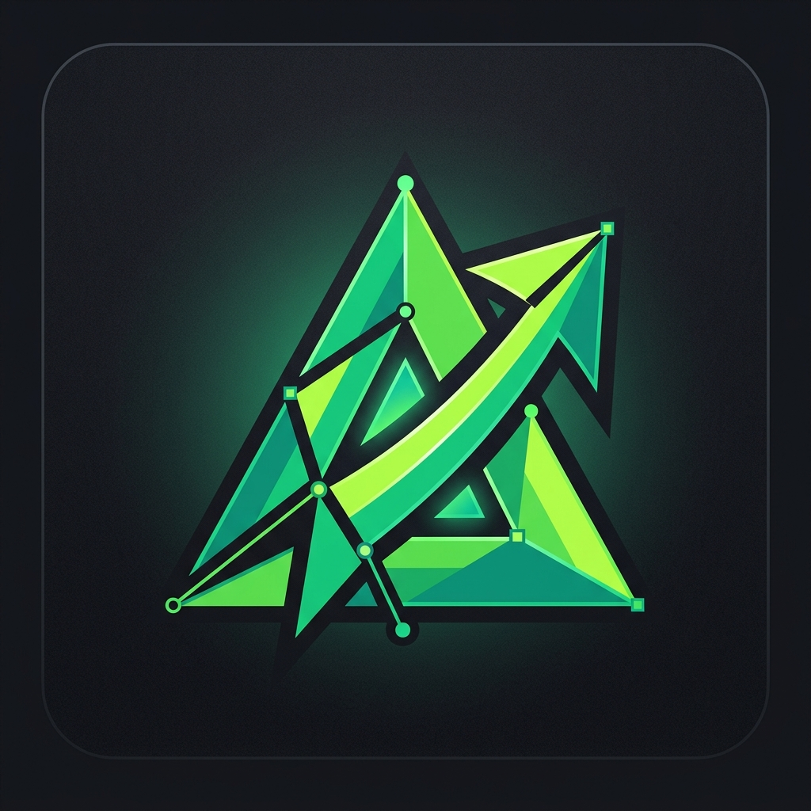
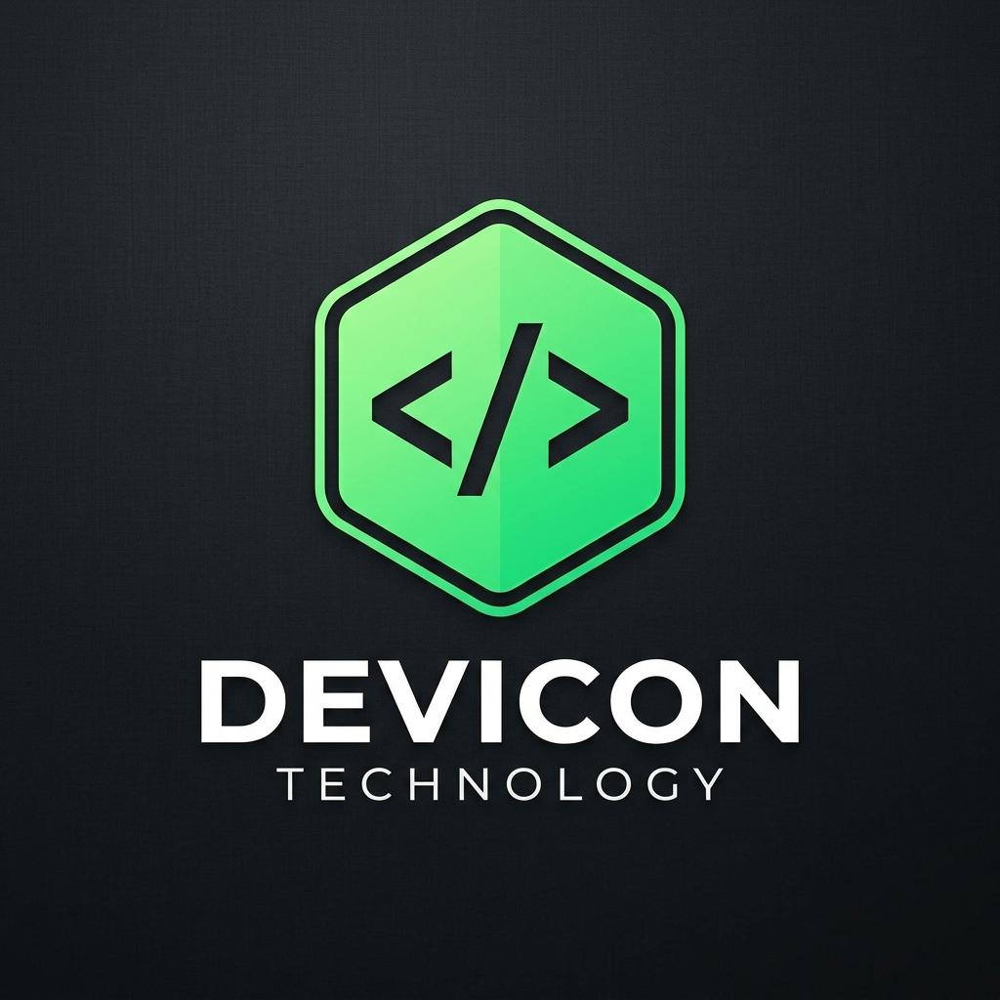

Tentang Kami About Us
Kami adalah Kelompok 3 dari kelas X-2 SMA Trinitas Bandung. Melalui proyek INSPIRE 2025, kami mengolah sampah organik menjadi briket kompos yang bermanfaat sebagai pupuk alami.
We are Group 3 from class X-2 of SMA Trinitas Bandung. Through the INSPIRE 2025 project, we process organic waste into compost briquettes as natural fertilizers.
Anggota Kelompok Group Members
Empat siswa yang berdedikasi membawa inovasi briket kompos dari konsep hingga kenyataan.
Four dedicated students bringing the compost briquette innovation from concept to reality.

- Membuat dan Mencari sumber data riset
- Membuat pengertian dan isi yang jelas di Google Docs
- Eksekutor lapangan yang efisien
- Memastikan cetakan briket padat dan siap pakai

- Pengarah desain visual website
- Mempresentasikan ide ke medium interaktif digital

- Pemikir strategis inovasi produk
- Memelopori fungsi penyerapan slow-release pada briket
Mengapa Memilih Briket Kompos?
Inilah pendapat dari tim kami mengenai keunggulan briket kompos sebagai solusi pupuk masa depan.
"Menurut saya, briket kompos ini sangat revolusioner karena bisa mengurangi bau sampah organik di sekolah dan lebih mudah dikemas secara rapi."
"Bentuknya yang padat membuat nutrisi di dalamnya tidak mudah luntur saat penyiraman, sehingga tanaman mendapatkan pupuk secara bertahap."
"Inovasi ini mendukung gerakan Zero Waste di SMA Trinitas. Dari siswa, oleh siswa, dan untuk bumi yang lebih hijau."
"Dengan briket kompos, kita tidak perlu repot lagi menggali tanah. Cukup letakkan dan briket akan menyuburkan tanaman."
Mengapa Website Ini Dibuat? Why Build This Website?
Website ini lahir dari keinginan untuk membuat materi pengolahan limbah organik, khususnya Briket Kompos, menjadi lebih mudah dipahami dan tidak membosankan. Dengan desain modern dan interaktif, diharapkan proses belajar menciptakan energi alternatif jadi pengalaman yang menyenangkan.
This website was born out of a desire to make Indonesian learning materials, specifically Procedure Text, easier to understand and less boring. With a modern and interactive design, learning becomes a fun experience.
Dibangun Dengan Built With

Google Fonts
SVG Icons
DeviconLayanan Saya My Services
Web Development
Membangun website responsif dan cepat menggunakan framework terbaru.
Crafting high-performance, responsive websites using the latest frameworks.
UI/UX Designer
Mendesain antarmuka yang intuitif dengan fokus pada pengalaman pengguna.
Designing intuitive user interfaces that focus on seamless user experience.